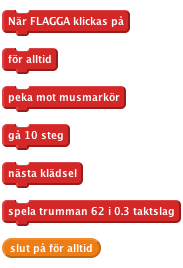
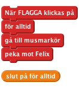
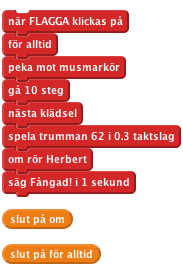
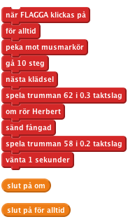
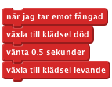
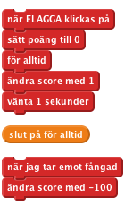

Nivå 1
Felix & Herbert
Vi ska skapa ett spel där katten Felix ska försöka ta musen Herbert. Du kontrollerar Herbert med muspekaren och försöker undvika att bli fångad av Felix. Ju längre du håller dig ifrån honom desto fler poäng får du, men se till att inte åka fast för då går poängen ner igen!
Skapa följande script:

Klicka på den gröna flaggan. Följer Felix muspekaren? Ser det ut som att han går när han rör sig? Rör han sig i rätt hastighet?
Nu vill vi att Felix ska jaga musen Herbert istället för muspekaren.
Ge Herbert det här scriptet:

Klicka på den gröna flaggan.
Rör sig Herbert med musmarkören? Jagar Felix Herbert?
Vi vill att Felix ska veta när han har fångat Herbert, och säga det till oss.
Ändra Felix script så det ser ut såhär:

Klicka på den gröna flaggan.
Säger Felix till när han har fångat Herbert?
Istället för att Felix säger någonting så vill vi att Herbert ska förvandlas till ett spöke när han fångas.
Ändra i Felix script så att det skickar ut följande meddelande när han fångar Herbert.

Skapa ett nytt script till Herbert för att förvandla honom till spöke:

Klicka på den gröna flaggan.
Blir Herbert ett spöke när han fångas? Spelar Felix de rätta ljuden när han ska? Står Felix still tillräckligt länge för att Herbert ska kunna ge sig iväg?
Nu lägger vi till ett poängsystem så vi vet hur bra vi är på att hålla Herbert vid liv. Vi börjar med att låta poängen vara noll och höjer den med ett varje sekund. Om Felix fångar Herbert minskar vi poängen med hundra.
På scenen, skapa de här två scripten

Klicka på den gröna flaggan.
Ökas pängen med ett varje sekund? Minskas poängen med 100 när Herbert fångas? Vad händer när Herbert fångas innan poängen har blivit hundra? Nollställs poängen när du startar om spelet?
Bra jobbat, nu är du klar och kan spela spelet! Glöm inte att du kan dela spelet med dina kompisar genom att klicka på Dela ut i menyn.